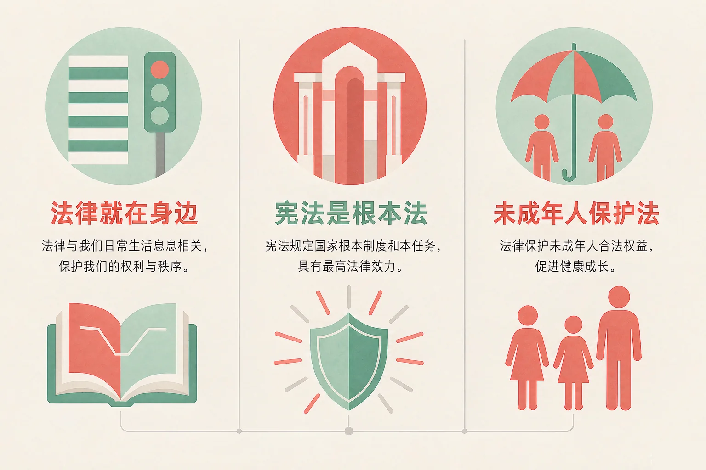
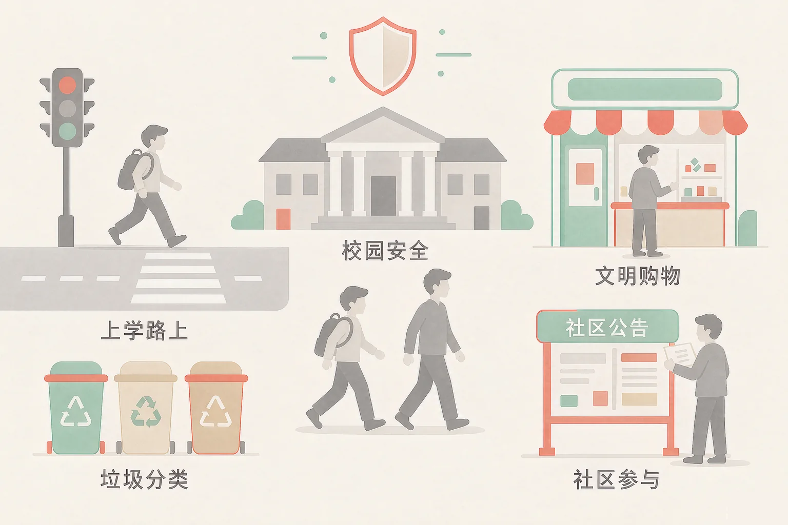
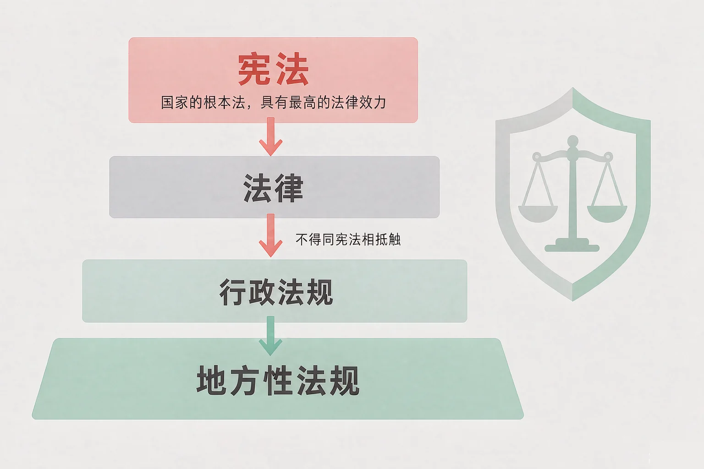

Gallery
v1.0.0 · skill v7.22.0
小学六年级 · 道德修养
当我们还小的时候，是谁在悄悄守护我们？

选一个你真正想知道的问题，后面的活动都会围着它转。
选择或输入后，这节课会围绕你的问题展开。
先凭直觉选一个，选完立刻看到解释——错了也没关系，正好知道要重点听哪里。
1. 下面哪一句话说准了法律的特点？
法律是由国家制定或认可、靠国家强制力保证实施、对全体社会成员具有普遍约束力的行为规范。靠国家强制力保证实施，正是它区别于道德和纪律的最主要特征。错因提醒：常见错误是把法律当成建议，或者误认为法律只管大人——法律面前人人平等，小学生同样在法律保护之中。
2. 在我国众多法律里，宪法处于什么位置？
宪法是国家的根本法，是治国安邦的总章程，具有最高的法律效力，一切法律、行政法规和地方性法规都不得同宪法相抵触。错因提醒：有的同学误认为宪法也是一部只管某件事的具体法律，其实它规定的是国家生活中最根本、最重要的问题。
3. 遇到自己解决不了的困难，下面哪种做法更合适？
遇到困难及时说出来，找对人、说清楚，才是对自己最好的保护。父母和老师是最先可以依靠的人，情况紧急还可以拨打报警电话一百一十。错因提醒：有的同学误认为说出来就是「打小报告」，其实求助是为了让自己安全，也让事情不再变糟。
为什么要学这一课？
我们每天都在过马路、上学、买东西、和同学相处（And）；可要问「法律和我到底有什么关系」，很多同学只能说出模糊的印象（But）；所以这节课先把法律是什么、它凭什么管用弄清（Therefore）。
法律是由国家制定或认可、靠国家强制力保证实施、对全体社会成员具有普遍约束力的行为规范。

生活里，它一直在
上学有《中华人民共和国义务教育法》；过马路有《中华人民共和国道路交通安全法》；买东西有《中华人民共和国消费者权益保护法》；保护环境有《中华人民共和国环境保护法》。
有的同学误认为法律离我们很远，只有犯法的人才跟法律打交道；也有的同学把道德和法律搞混，觉得违反了道德就等于违法。其实法律是底线，道德是更高的要求，两者都在守护我们，但不是一回事。
🔍 深层理解 换个角度再看一遍这件事，看看能不能说出背后的原理。
看见它：同一个路口，红灯亮着，所有人都在等——没有人站在旁边喊，大家却都停下来。这时候起作用的不只是习惯，还有法律。
解释它：为什么法律说话更算数？因为它背后有国家强制力。道德靠我们心里的认同和大家的评价，法律则由国家保证实施。
迁移它：这套想法在班里也成立：班规能约束大家，是因为我们一起认同它；而法律无论你认不认同，都必须遵守——这就是它最硬的地方。
先点左边一个生活情境，再点右边一部管这件事的法律。配对了会连起来，配错了会告诉你错在哪里。
先点左边一个情境。
为什么要弄清楚宪法？
我们已经知道身边有很多部法律（And）；但这么多法律里，谁说了算、有没有一部总章程（But）；所以这节课要弄清宪法的地位和最高法律效力（Therefore）。
宪法是国家的根本法，是治国安邦的总章程
它规定的是国家生活中最根本、最重要的问题：国家的性质、根本制度、根本任务、公民的基本权利和义务、国家机构的组织及其职权。
宪法具有最高的法律效力
一切法律、行政法规和地方性法规都不得同宪法相抵触；任何组织或者个人都不得有超越宪法和法律的特权。

三条可以随身带走的知识
① 宪法的制定和修改程序比其他法律更加严格，它的修改要由全国人民代表大会以全体代表的三分之二以上的多数通过。② 一切组织和个人都必须以宪法为根本的活动准则。③ 我国把十二月四日设立为国家宪法日。
有的同学误认为宪法也是一部只管某件小事的具体法律；也有的同学觉得宪法很高很远，跟小学生没关系。其实我们上学、被保护、被尊重，背后都有宪法确立的保障。
🔍 深层理解 换个角度再看一遍这件事，看看能不能说出背后的原理。
看见它：五部不同的法律管五件不同的事，却都写着同样的开头——依据宪法。它们站在同一块地基上。
解释它：为什么宪法有最高的法律效力？因为如果每部法律都能各说各的，规则就会互相打架。宪法定的是最根本的规则，其他法律都必须与它一致。
迁移它：这就像一个小组做任务，先定好总目标，再分工写各自的方案；分工可以不一样，但都不能偏离总目标。
先点左边一个困难情境，再点右边你认为最该找的那一类保护力量。配对了，会告诉你该找谁、可以怎么做。
先点左边一个情境。
情境：班里要为同学们做一份求助指引，四位同学写了四条方案。请你当一次校对员，判断哪一条可行、哪一条必须改。
《中华人民共和国未成年人保护法》保护谁、保护什么
它专门保护未满十八周岁的公民，确立了家庭保护、学校保护、社会保护、网络保护、政府保护和司法保护；保护未成年人是全社会的共同责任，坚持最有利于未成年人的原则。
有的同学把《中华人民共和国未成年人保护法》和《中华人民共和国宪法》搞混了。宪法是国家的根本法；未成年人保护法是专门保护未满十八周岁公民的一部法律，它把宪法的精神落到了我们的日常生活里。
先凭直觉选一个，选完立刻看到解释——错了也没关系，正好知道要重点听哪里。
1. 关于法律和道德的关系，下面哪句话说得准确？
法律和道德都是行为规范，也都约束人的行为；区别在于法律靠国家强制力保证实施，对全体社会成员具有普遍约束力。错因提醒：常见错误是把道德和法律搞混，以为违反道德就等于违法。其实法律是底线，道德是更高的要求。
2. 关于宪法，下面哪句话说得准确？
宪法是国家的根本法，具有最高的法律效力；一切法律、行政法规和地方性法规都不得同宪法相抵触。错因提醒：有的同学误认为宪法离自己很远。其实我们能上学、能被保护，背后都有宪法确立的保障。
3. 小刚被同学反复起侮辱性外号，他先告诉了班主任，老师出面制止了这件事。这体现了哪一类保护？
学校应当关心、爱护学生，制止欺负同学的行为，这属于《中华人民共和国未成年人保护法》确立的学校保护。错因提醒：容易把六类保护搞混。可以记住：在家里是家庭保护，在学校是学校保护，在社会上是社会保护。
三步各选一个：我想先想清楚的情境 → 我第一个会找的人 → 我打算怎么说清楚。选完，你就有了自己的守护锦囊。
从第一步开始选。
把它写下来：
想一想，如果你真的遇到麻烦，你最先会告诉谁？把那个人的名字和你打算说的第一句话写下来，收在自己的小本子里。
先凭直觉选一个，选完立刻看到解释——错了也没关系，正好知道要重点听哪里。
1. 放学路上，一位陌生的大人一直跟着小丽，还说让她跟着走。小丽最合适的做法是：
社会保护要求全社会为未成年人营造安全的环境；遇到这种情况，要先让自己处在大人的视线和人群之中，再及时求助。错因提醒：有的同学误认为「不理他就没事了」。其实躲起来反而更危险，及时求助才是最有效的办法。
2. 小宇的爸爸生气时说不让他上学了。从法律的角度看，下面哪种说法更合适？
父母或者其他监护人应当保护未成年人，也要保障我们受教育的权利，这属于家庭保护的要求；遇到说不通的情况，可以请老师、学校和社区帮助。错因提醒：常见错误是把「家里的事」和「法律管不着」搞混。保护未成年人，全社会都有责任。
3. 关于遇到困难该找谁，下面哪句最值得记在心里？
把事实说清楚，找对人，是解决问题最快也最稳的路。错因提醒：把对方的信息公开出去，自己也可能会做错事。还可以试试：先把情况告诉大人，再决定怎么处理。
一句口诀：法律身边守，宪法在最高；六道保护伞，一撑就牢靠；遇事别硬扛，说清找人早。
给别人讲一遍：请用「宪法」和「未成年人保护法」这两个词，给家里人讲一件事，说清楚它们的区别在哪里。
再动一动手：写一写六类保护各一个身边的例子，做成六行小清单，贴在自己的书桌上。
三层练习，做完第一、二层就算通关；第三层留给愿意继续探索的同学。
⭐ 基础巩固（必做）
⭐⭐ 能力应用（必做）
⭐⭐⭐ 迁移挑战（选做）
左边是学它之前要先会的，右边是学会之后可以继续探索的，下面是同一领域的伙伴知识。
图谱正在加载：首次进入需下载知识索引（约 1–3 秒），加载完成后本行会自动消失。